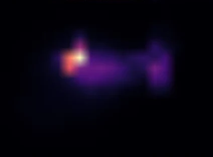
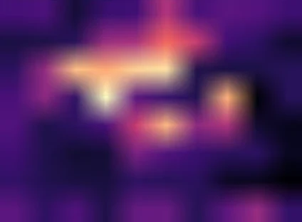

01 / FOREST FOLLOWING OOD
Keep the original target.
A distractor passes closer to the robot. FoveaNav keeps following the original person, while BC turns toward the distractor.
Pause at a moment
In the robot view: the warm overlay shows Gaussian gaze; cyan and pink curves show predicted trajectories.
Inspect attention and occlusion sensitivity
Where do predictions respond?
Attention shows the navigation transformer's weighting. Occlusion sensitivity measures how much the predicted trajectory changes when an image patch is masked.
FoveaNav snapshot at 0:07 in the robot-view clip. These maps are distinct from Gaussian gaze.



